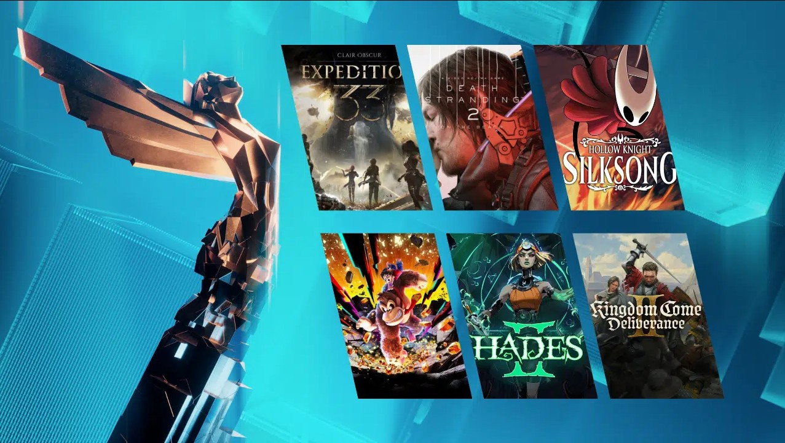

Clair Obscur: Expedition 33 é um RPG de turnos inovador com toques de tempo real, desenvolvido pela Sandfall Interactive na Unreal Engine 5. Ambientado em um mundo de fantasia sombria inspirado na Belle Époque francesa, o jogo acompanha a Expedição 33 em uma missão desesperada para destruir "A Pintora", que anualmente apaga pessoas com base na idade.
Portal Tec
Últimas Notícias : Saiu a lista de games do ano de 2025

Os indicados para o The Game Awards 2025 foram finalmente revelados! Nesta edição, haverá 29 categorias reconhecendo o que há de melhor nos games, incluindo os clássicos prêmios de Jogo do Ano, Melhor Direção, Jogo Indie do Ano e Melhor Jogo Indie de Estreia.
Clair Obscur: Expedition 33
Death Stranding 2: On the Beach
Death Stranding 2: On the Beach se passa cerca de 11 meses após o primeiro jogo, focando em Sam Porter Bridges em uma nova missão na Austrália para conectar sobreviventes à rede quiral e evitar a extinção. Enfrentando ameaças como chuva temporal, o jogo explora temas de conexão e luto, com jogabilidade de ação e aventura em mundo aberto, lançado para PS5 em 2025.
Donkey Kong Bananza
Donkey Kong Bananza (2025) é um jogo de plataforma 3D para Nintendo Switch 2 onde DK e Pauline viajam ao subterrâneo do planeta para recuperar bananas roubadas pela VoidCo. A história foca na dupla descendo camadas terrestres, enfrentando o vilão Void Kong e usando a voz poderosa de Pauline para liberar
Hades 2
Hades II é um roguelike de ação da Supergiant Games onde você controla Melinoë, princesa imortal do Submundo e irmã de Zagreus, em uma missão para derrotar Cronos, o Titã do Tempo. Treinada pela bruxa Hécate, ela utiliza magia e armas em uma jornada de vingança para salvar sua família, explorando um mundo mítico maior com a ajuda dos deuses do Olimpo.
Hollow Knight: Silksong
Hollow Knight: Silksong é uma sequência direta focada em Hornet, a princesa protetora de Hallownest. Capturada após os eventos do primeiro jogo, ela é levada para Pharloom, um reino assombrado, governado por seda e música, que sofre com uma praga diferente. O objetivo é ascender à superfície, desvendando seu passado e os motivos do rapto.
Kingdom Come: Deliverance 2